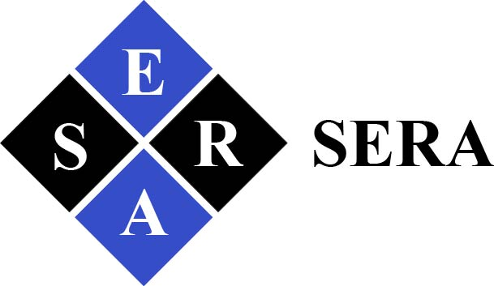

Johnson Jasson
Electrical & Electronics Engineering · Mathematics · |
Alfred University · GPA 4.00/4.00 · Expected May 2029
Seeking Summer 2027 internships in hardware, semiconductors, and embedded systems.
Electrical & Electronics Engineering · Mathematics · |
Alfred University · GPA 4.00/4.00 · Expected May 2029
Seeking Summer 2027 internships in hardware, semiconductors, and embedded systems.
I'm a first-generation student at Alfred University studying Electrical & Electronics Engineering and Mathematics. I enjoy building things, testing my assumptions, and using math to understand why a system behaves the way it does.
My interests center on hardware engineering, semiconductor devices, and embedded systems. Through research and personal projects, I've explored both computational models and physical prototypes, and I'm especially drawn to testing, troubleshooting, and design decisions.
Beyond technical work, I help students find opportunities through SERA Access and campus engineering communities. I value sharing what I learn and working with people who bring different perspectives to a problem.
Personal Project · Dec 2025
Built a working ESP32 prototype that controls an electrical load from a mobile device over Wi-Fi. Implemented an embedded HTTP server in C/C++ that translates incoming commands into GPIO output changes, cutting manual switching time by up to 10 seconds.
Personal Embedded Systems Project · Ongoing
Course Research Project & Poster Presentation · Alfred University · Fall 2025
Benchmarked 14 machine-learning models to predict battery State of Health across charge–discharge cycles, and explored a CNN-based digital-twin approach to State of Health and State of Charge estimation for renewable-energy microgrids. Presented the findings as a research poster.
AI-Assisted Development: Claude Code · GitHub Copilot · Cursor · Codex (agentic coding workflows)
Currently Learning: CUDA · GPU Programming · HSPICE · EDA Tools
Project-based program in applied machine learning: logistic regression, K-Nearest Neighbors, deep neural networks, and NLP, through exploratory data analysis, feature engineering, model training, and evaluation. CGPA 96.87/100.
Capstone: built a machine-learning model on Airbnb listing data using location, amenities, neighborhood, and host attributes.
Studied core data structures and algorithms in Python, including arrays, linked lists, trees, recursion, searching, sorting, and complexity analysis.
Developed structured problem-solving, leadership, communication, and adaptability skills through a digital-first leadership program.
Applied electrical distribution planning in AutoCAD, circuit-breaker selection, and aerospace electrical standards in a simulated engineering environment.

Student Empowerment & Resource Access · EdTech · Tanzania & East Africa
SERA is an EdTech platform I co-founded to help students in Tanzania and across East Africa find scholarships, fellowships, internships, and mentorship, with eligibility, deadlines, and application steps laid out clearly in one place.
As lead developer, I architected and shipped the web platform in HTML and CSS, using AI-assisted development tools (Claude Code, Cursor) to move from design to deployment quickly, and deployed it on Vercel.
To drive early engagement, I led an EdTech competition that drew 44 students and 11 project submissions, with a $400 innovation prize.
Launched and lead the campus chapter, building a platform for Black engineering students to grow professionally and reach internship opportunities.
Lead professional development for nearly 100 members through weekly resume, interview, and career sessions.
Co-direct operations and member growth while leading a team to build a robotics prototype end to end.
Engaged NVIDIA engineers on GPU computing and AI infrastructure while refining technical interview readiness.
I'm seeking Summer 2027 internships in hardware engineering, semiconductors, and embedded systems. I'm also interested in research collaborations and hands-on engineering projects.